Август 2010
К нам приезжала No Mercy Sister, и немножко пофотала крысов. Наглядно показано, чем зеркалка лучше мыльницы. К сожалению, опыта съемки крыс не было — а они на месте не сидят, вот и получилось всего несколько кадров. Съемка была без вспышки, и с резкостью на большинстве отснятого были проблемы. Но кое-что получилось:

Это благородный дон Рэба из Крыскиного Теремка , 2 года и 7 месяцев. Бодрый старичок; бегал, понятно, не быстро — поэтому удалось отснять нормально.
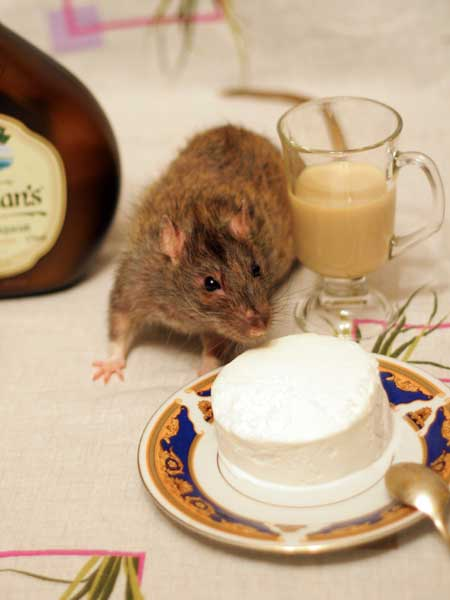
— О, мороженое!

— А что это вы все на меня так смотрите?

— Ладно, посижу, раз фотают…
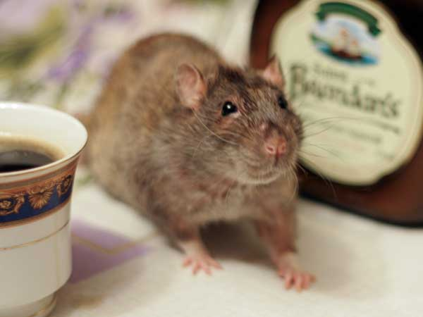
— Ладно, я пошел.
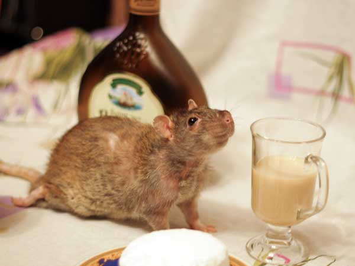
Вот тут видно, что ноги уже волочатся… но на ручках он ползает даже по этажам клетки.

Жоффруа Тори из Домика Голубой Крысы, 1 год 3 месяца. Почти килограмм шампаневой пушистости. Это его и подвело — к сожалению, застойная сердечная недостаточность с ателектазом двух долей легкого, пожизненно на лекарствах теперь.

— А что тут за ликёрчик?
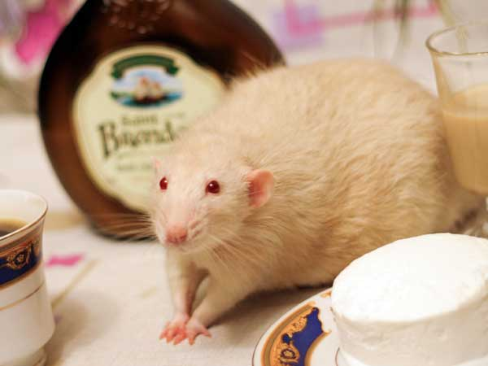
— Не, сладкое не пью.
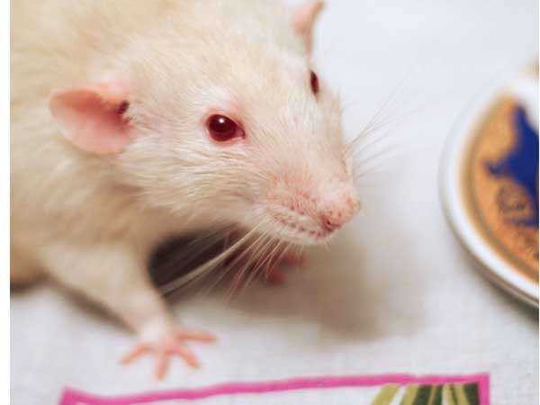
— А у вас таких ушей нет! Хотя что это я — люди-то как раз все дамбо…

Сентябрь Первый-Крылечкин, 1 год 1 месяц.

Передвигался по декорациям бегом, изредка останавливаясь, где его и удалось сфотать.
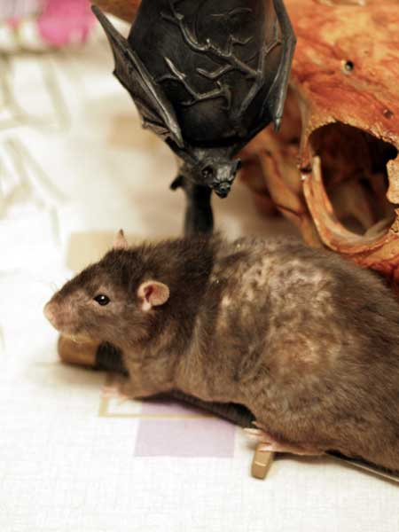
Ритуальный кубок, ритуальный череп и ритуальный крыс :-)
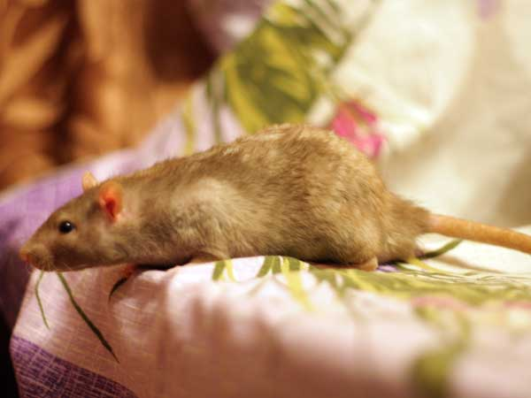
Циклон Б из Эдема, 4 месяца. Редкий окрас — минк.

Вот только на декорациях он вообще не сидел, все врем пытаясь удрать, и цветопередача нарушена — лампы накаливания в кондовой люстре времен Хрущева…

Терабайт из Крыскиного Теремка, 4 месяца. Сын дона Руматы, племянник дона Рэбы.
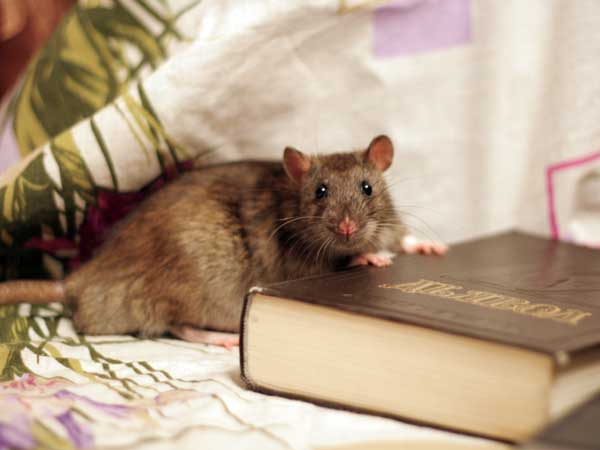
Типа самую ценную книгу нашел.
Тут плохо видно, но
книга называется «Дьявол». Надо было чуть выше ракурс взять.
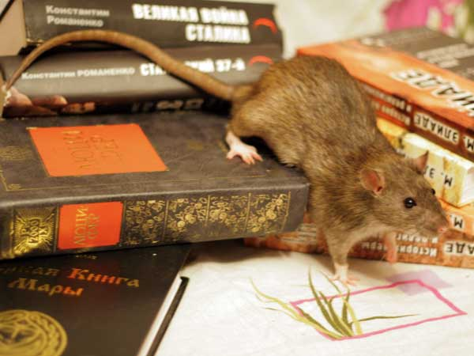
Шустрый скотин.

И любознательный — везде лазит…

…и вылазит.
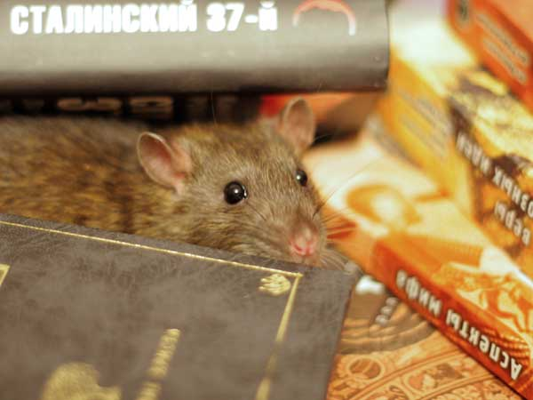
Нашел норку и сидит довольный.
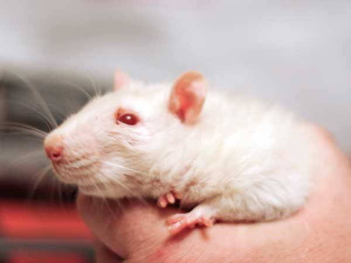
Виконт Маггот-Сосискин. Возраст точно
неизвестен. К нам попал в июле 2009,
весь искусанный.
Его прооперировали,
быстро оклемался. Только на заднице лысинка осталась, где было много
покусов и швов.

Весил около 450г, так и не вырос, т.е.попал к нам уже не подростком. С учетом того, что вел себя сразу по-взрослому, так что, вероятнее всего, ему был приблизительно год. Значит, сейчас — минимум почти два, а, может, и больше двух.

К сожалению, начал слепнуть (катаракта), но, главное —
неоперабельная опухоль в животе. Хорошо капсулированная, пока по поведению и
не видно, так — порфиринит немного…
Очень спокойный крыс, возьмешь в руки
— сразу начинает «мурлыкать».
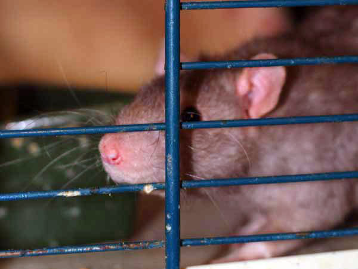
Иннокентий Пасюкович Тихвинский, 1 год.
Гордый дикарь в руки не дается, поэтому сфотали так, через решетку.
Но
сегодня я ему с полминуты бок чесал, а он не уходил! Так что, думаю, зимой
будет и на руки даваться снова, как в детстве.